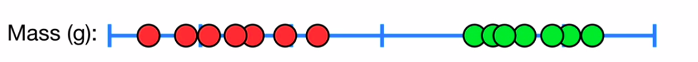
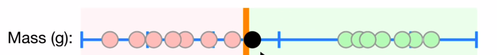
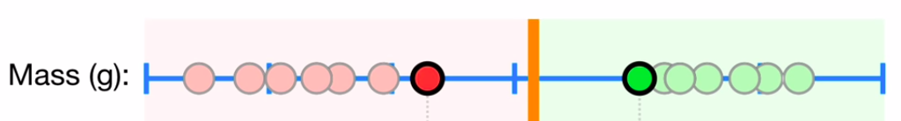
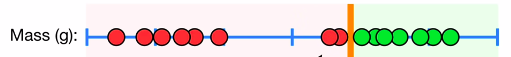
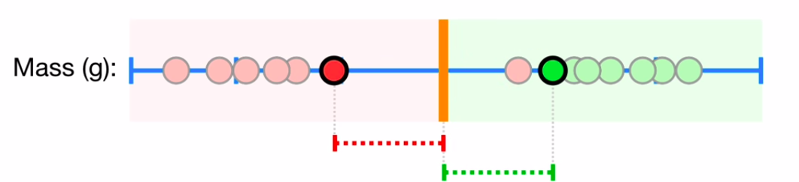
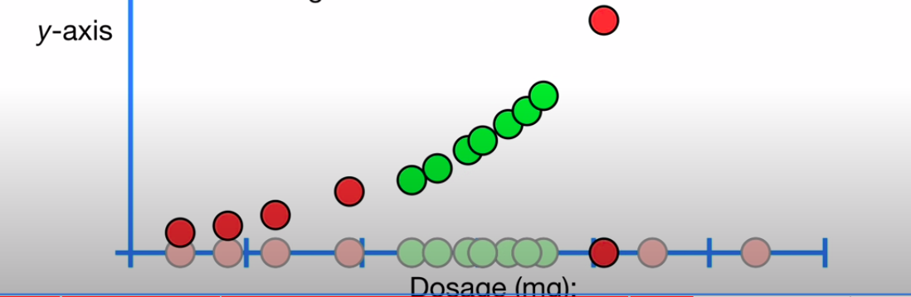
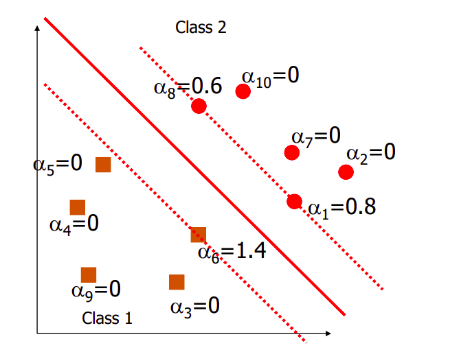
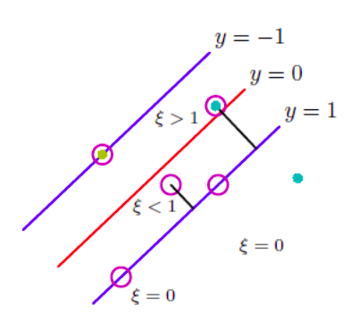

§ MALIS: State-Vector Machines
§ Intuition
Classification is essentially finding a boundary that separates the data points into two segments so that when we get a new data point, the segment that it falls on determines the label it belongs to! The real challenge is positioning this boundary → which is the focus of every classifier. Let's take the figure shown below as an example

Here, the data is 1D - Mass(g) - and we need to classify the person as Obese (Green) or Not Obese (Red). If we put the decision boundary at the edge of the red points, as shown below, our classifier would work for points inside the respective clusters, but for a point at the boundary, as shown, it would classify it as not obese even though this point is closer to the red cluster.

This is clearly not desirable, and this would also be the case if we move this boundary very close to the green points. Let's define the shortest distance between the observations and the boundary as the Margin. One way to get a decent classifier would be to place this boundary in such a way so that the margins are equal → This is possible in the case where we put the boundary at exactly half the shortest distance between the data-sets, as shown below

This is called the Maximum Margin Classifier since the margins, in this case, have the largest value than any other possible case. But the shortfall of this is that it is sensitive to outliers:

Here, the outliers push the Max Margins very close to the green cluster and thus, overfit the boundary to the training set as clearly a more equally distributed test set would have to make some misclassifications! Thus, to make a boundary that is more robust to these outliers, we must allow misclassifications by introducing soft margins around our boundary that signify regions in which misclassifications are allowed:

Thus, any red data point within this soft margin that falls in the green zone would be classified as green while the data in the red zone would be classified as red. This soft margin, in contrast to the margin above, need not be the shortest distance from the data to the boundary but can be tuned through cross-validation. This classifier is called a
Support Vector Classifier → The observations within the soft margins are called support vectors which can be tuned. In 2D, the boundary would be a line, in 3D a plane → In general, it is called a hyperplane.
§ Non-linearly seperable data
Now, let us look at new case of drug dosage classification, where the dosage is only safe within a certain range of values and unsafe outside it:
Here, the data is not linearly separable since no single boundary can separate it. Thus, support vector classifiers fail here! One way to tackle this is by transforming this data into a higher dimensional plane. If we square each data point and look at the 2D data, then we see that it is now linearly separable!

Now, we can create a boundary in this new higher dimensional plane and just map that back to our original plane. This is called a
Support Vector Machine. The transformation we performed on the data is called a
Kernel, and in this case, the Kernel is a
dn kernel with n having the value of 2 → Polynomial kernel.Technically, the support vector classifier is also an SVM in is dimension.
§ Math of SVM
§ Hard MArgin SVM
For a set of training data
{xi,yi}, with
x∈RM and
y∈{−1,+1} with the classifications being -1 and + 1 and
i=1,....,N , let us apply a transformation first
ϕ:RM→RDs.t.ϕ(x)∈RD
Our objective is to fit a line through this data, and so our model is
y^(x)=wTϕ(x)+w0
which implies that classifications are:
- yi(wTϕ(xi)+w0)>0 if the classification is correct
- yi(wTϕ(xi)+w0)<0 if the classification is incorrect.
The distance of any training sample from the seperation line line is →
d(ϕ(xi),L)=∣∣w∣∣yi(wTϕ(xi)+w0)
Now, our optimization problem is to
maximize the minimum distance for each class, which can be formalized as
w,w0argmaxM=w,w0argmax{imind(ϕ(xi),L)=w,w0argmax∣∣w∣∣1{iminyi(wTϕ(xi)+w0)}
Now, we add some constraints to our Margin → Set
M=1/∣∣w∣∣ , which essentially means that the minimum distance for our problem has been set to 1 so that we only have to worry about
∣∣w∣∣1. In other words, we need to have:
∣wTϕ(xi)∗+w0∣=1
This is only possible if data points satisfy:
yi(wTϕ(xi)+w0)≥1
If we look at the problem of maximizing
1/∣∣w∣∣, it is the same as minimizing
∣∣w∣∣ → Let's add two transformations to it :
- ∣∣w∣∣→∣∣w∣∣2
- ∣∣w∣∣2→21∣∣w∣∣2
We see our minimization of
∣∣w∣∣ is still satisfied since minimizing half of its square will still give us the same result and so minimizing
21∣∣w∣∣2 should be the same as maximizing
∣∣w∣∣−1, which was out the original problem. Thus, we now have to find:
w,w0min21∣∣w∣∣2s.t.yi(wTϕ(xi)+w0)≥1∀i=1,....,N
This is called the
primal form → the form we reached using our intuition. We had a maximization type optimization and we converted it to a minimization problem without messing with our original goal. We now have to solve a constrained minimization problem. We solve this by creating a Langrangian Formulation → a function of the form:
L(x,y,λ)=f(x,y)−∑λigi(x,y)
where f is our optimization target and we put constraints on it in the form of
gi which are
λi is the Lagrange multipliers. Our approach to solving this is to differentiate the Lagrangian w.r.t the variables to get critical points
∇L(x,y,λ)=0⟶∇f(x,y)=λ∇g(x,y)
and substitute it back into
L to get a
Dual Formulation. So, formalizing our SVM minimization as a Lagrangian with
α as our multiplier, we get:
L(w,w0,α)=21∣∣w∣∣2−i=1∑Nαi[yi(wTϕ(xi)+w0)−1]
To minimize this function, we first differentiate L w.r.t
w :
⟹∂L/∂w=w−∑αiyiϕ(xi)=0w=∑αiyiϕ(xi)
Then, we differentiate L w.r.t
w0 as follows:
⟹∂L/∂w0=−∑αiyi=0∑αiyi=0
Then we differentiate w.r.t w :
⟹∂L/∂w=w−∑αiyiϕ(xi)=0w=∑αiyiϕ(xi)
We now plug the values into our lagrangian:
∴21∣∣w∣∣2−i=1∑Nαi[yi(wTϕ(xi)+w0)−1]=21(∑αiyiϕ(xi)∑αjyjϕ(xj))−(∑αiyiϕ(xi)∑αjyjϕ(xj))−(∑αiyiw0)+∑αiL(α)=∑αi−21i∑j∑αiαjyiyj[ϕ(xi).ϕ(xj)]
The new Expression →
L(α)=∑αi−21∑i∑jαiαjyiyj[ϕ(xi).ϕ(xj)] is the
Dual Form of the Maximum Margin Problem. An important thing to notice is that our dual form only depends on the dot products of our data points and thus, we can take advantage of Kernelization to make this independent of the nature of
ϕ :
L(α)=∑αi−21i∑j∑αiαjyiyjK(xi.xj)
And for classifying any new point, all we have to do it replace it in the place of
xj as shown:
y^test=i=1∑Nαi^[yi(ϕ(xi).ϕ(xtest)+w0)]
and this should satisfy the Karush-Kuhn-tucker conditions:
- αi≥0
- yi(wTϕ(xi)+w0)−1>0
- αi[yi(wTϕ(xi)+w0)−1]=0
This is the key to SVMs → If
α=0 then the point is not contributing to the margin and is not a support vector and for all
α>0 , the point
x is a support vector and contributes to the margin.

Thus, in summary, the dual expression gives us a set of
αi that represent points that are either support vectors or not. If we want to find the best boundary for these hard margins, all we have to do is compute
w^=∑αi^yiϕ(xi)
Which we then substitute into the third KKT condition, t get
w0 as follows:
⟹αi[yi(w^Tϕ(xi)+w0)−1]=0yi(w^Tϕ(xi)+w0)=1
Now, the y labels are either +1 or -1, and so,
w0=1−w^Tϕ(xi) or
w0=−1−w^Tϕ(xi) , which we can also write as:
w0=yi−w^Tϕ(xi)
In practice, we compute
w0 by summing multiple such expressions and dividing by
αi. A new point will be classified to
- Class 1 if w^Tϕ(xi)+w^0>0
- Class 2 if w^Tϕ(xi)+w^0<0
§ Soft-Margin SVM
The hard-margin constraint is very strong but does not work very well for overlapping classes or spread out data. Thus, we relax the constraints by allowing points to violate the margins → this is quantified by the slack variable
ξi≥0 for each point i, which measures the extent of violation.

Thus, for point outside the margins
ξi=0 and for points inside the margin
ξi=∣yi−(^y(xi)∣, and now, our constraint becomes
yi(wTxi+w0)≥1−ξi
And so, our problem becomes:
w,w0,ξminC∑ξi+21∣∣w∣∣2s.tyi(wTϕ(xi)+w0)≥1−ξiξi≥0∀n
We again formulate the Lagrangian:
L(w,w0,ξ,α,λ)=={21∣∣w∣∣2+Ci∑ξi}−i=1∑Nαi[1−ξi−yi(wTϕ(xi)+w0)]+i∑λi(−ξi)
Which, when differentiated gives the follownig expresions:
w=∑αiyiϕ(xi)∑αiyi=0C−αi−λi=0
The interesting thing is that the third expression helps us eliminate
ξi from the Dual form to get the expression:
∑αi−21i∑j∑αiαjyiyjϕ((xi)).ϕ((xj))
Which is the same as before. Thus, we can see that the only impact
ξ has is in shifting translating the constraint to include misclassifications. Thus, soft-margins allow us to perform the same optimization with an added impact on the classification constraint.